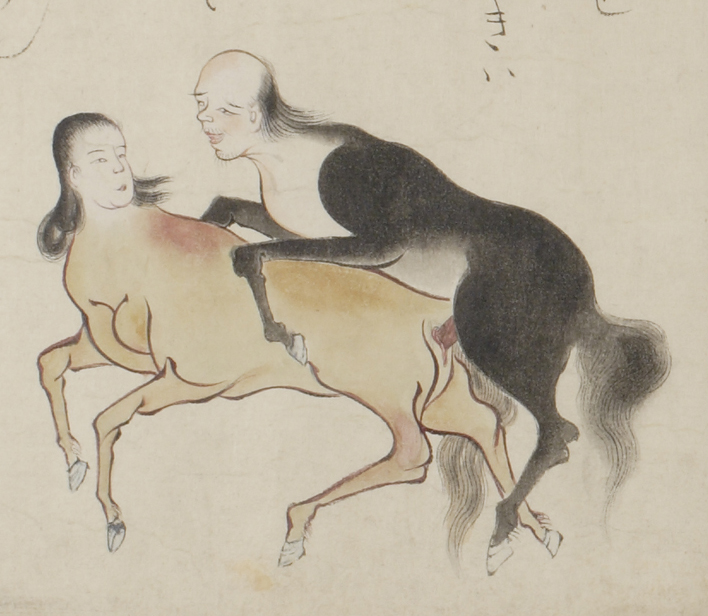

性交する獣の夫婦。頭部は人間である。男の獣は、黒い馬のような体をしており、長い尻尾を持っている。一方、女の獣は黄色い馬のような体である。両者とも額が広く、髪が長い。
出典：親書誌：U426_nichibunken_0058：地獄草紙絵巻；ジゴクゾウシエマキ／日付：2006／資源識別子：U426_nichibunken_0058_0006_0000
Copyright (c)2010- International Research Center for Japanese Studies, Kyoto, Japan. All rights reserved.